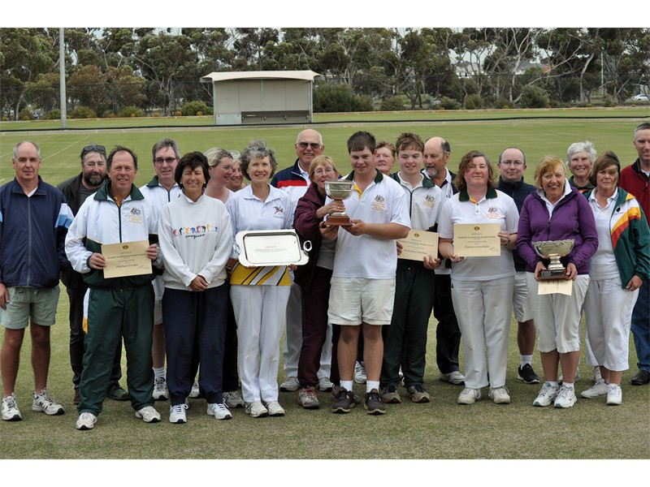
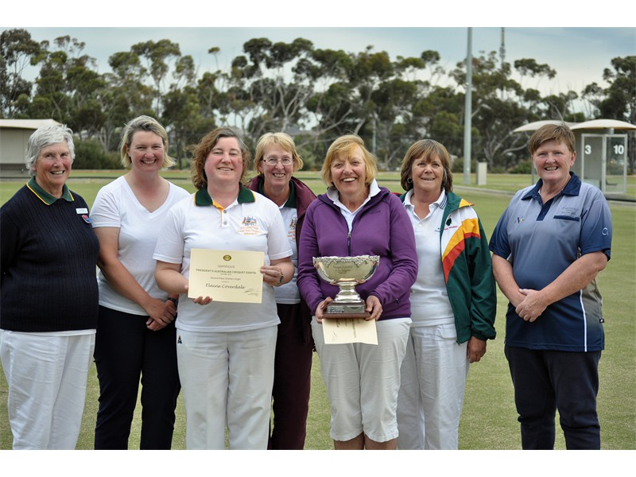
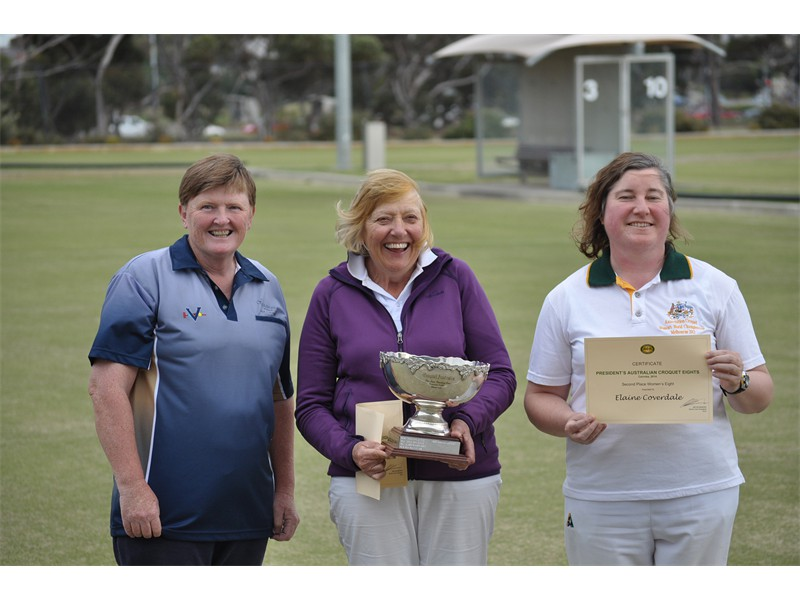

Photos President’s AC Eights 2014
To pause Slideshow: move mouse onto picture
- Winners at the front
- Anna Miller (Vic)r, Kerri-Ann Organ(Vic) Elaine Coverdale (Vic), Willy Silk (QLD),Sue Beattie(Tas) Elaine Roomes (Tas), Anne Quinn(Vic) - not shown Rosemary Newsham (Qld)
 Jannine Hawker(WA)
Jannine Hawker(WA) - From left to right Anne Quinn 3rd place(Vic), Sue Beattie winner of the Jean Armstrong Bowl (women’s 8)(Tas) and Elaine Coverdale 2nd place(Vic)